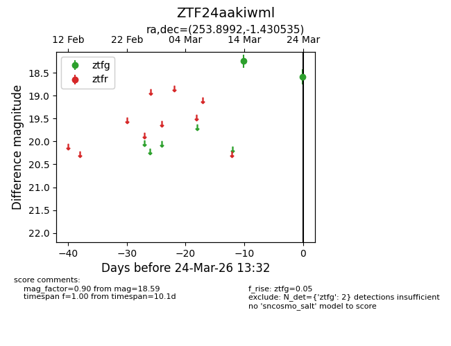
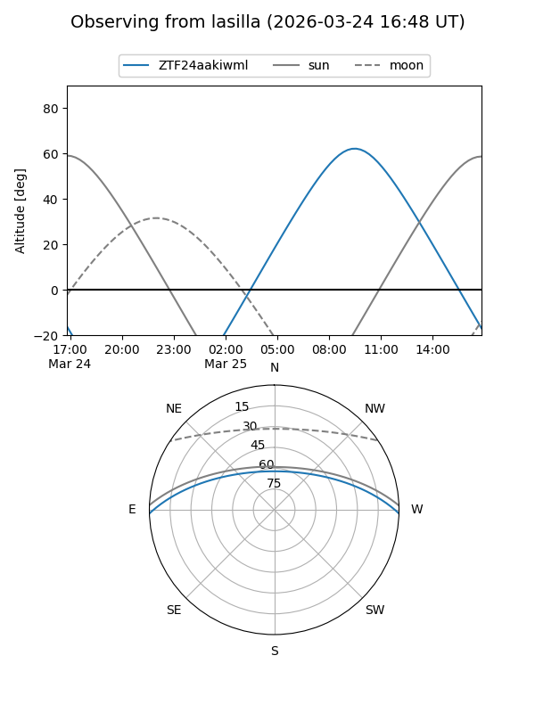
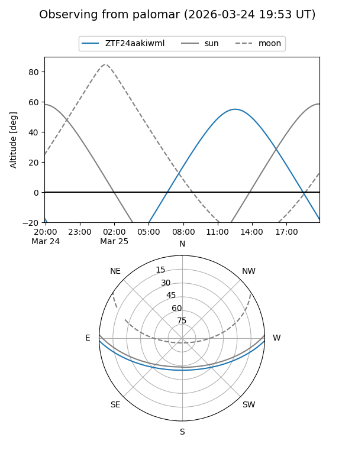

ZTF24aakiwml
Target ZTF24aakiwml at 2026-03-24 13:35
Aliases and brokers:
FINK: link
Lasair: link
ALeRCE: link
alt names
ZTF24aakiwml (ztf,fink_ztf)
Coordinates:
equatorial (ra, dec) = 253.8992,-1.43053
equatorial (HMS+DMS) = 16:55:35.82,-01:25:49.92
galactic (l, b) = (17.4096,+24.79776)
Flags:
Photometry:
last ztfg=18.59
2 ztfg detections
Lightcurve

Visibility


Additional plots